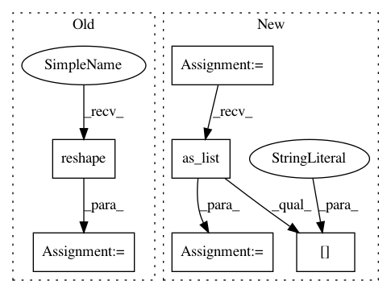

3497526703e85981f39b643e923dcb1e40eec366,texar/modules/encoders/rnn_encoders.py,,_forward_single_output_layer,#,81
Before Change
d3_shape = tf.concat([tf.shape(inputs)[:2], [-1]], axis=0)
// Reshape inputs to [-1, dim]
if flatten_inputs:
inputs = tf.reshape(inputs, d3_shape)
inputs_T = tf.transpose(inputs, perm=[2, 0, 1])
inputs_flat = tf.transpose(tf.layers.flatten(inputs_T), perm=[1, 0])
// Feed to the layer
output_flat = output_layer(inputs_flat)
// Reshape output to [batch_size/max_time, max_time/batch_size, new_dim]
output = tf.reshape(output_flat, d3_shape)
After Change
`[max_time, batch_size] + input_size` if :attr:`time_major=True`.
input_size: An `int` or 1D `int` array.
dim = np.prod(input_size)
inputs_flat = inputs
if flatten_inputs:
inputs_flat = tf.reshape(inputs_flat, [-1, dim])
// Feed to the layer
output_flat = output_layer(inputs_flat)
output_size = output_layer.compute_output_shape([1, dim]).as_list()[1:]
output_size = np.array(output_size)
// Reshape output to [batch_size/max_time, max_time/batch_size] + output_size
output_shape = tf.concat([tf.shape(inputs)[:2], output_size], axis=0)
output = tf.reshape(output_flat, output_shape)
return output, output_size
In pattern: SUPERPATTERN
Frequency: 3
Non-data size: 6
Instances
Project Name: asyml/texar
Commit Name: 3497526703e85981f39b643e923dcb1e40eec366
Time: 2018-06-04
Author: zhitinghu@gmail.com
File Name: texar/modules/encoders/rnn_encoders.py
Class Name:
Method Name: _forward_single_output_layer
Project Name: deepmind/sonnet
Commit Name: bc08dbfbe77554bf3458529285003f0bf92eecd3
Time: 2018-07-17
Author: fviola@google.com
File Name: sonnet/python/modules/nets/vqvae.py
Class Name: VectorQuantizerEMA
Method Name: _build
Project Name: deepmind/sonnet
Commit Name: bc08dbfbe77554bf3458529285003f0bf92eecd3
Time: 2018-07-17
Author: fviola@google.com
File Name: sonnet/python/modules/nets/vqvae.py
Class Name: VectorQuantizer
Method Name: _build